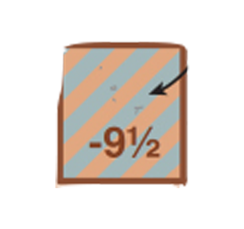
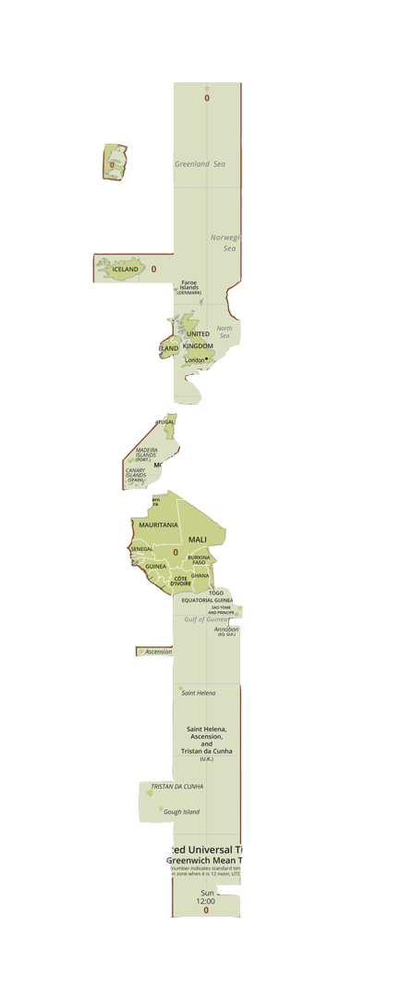
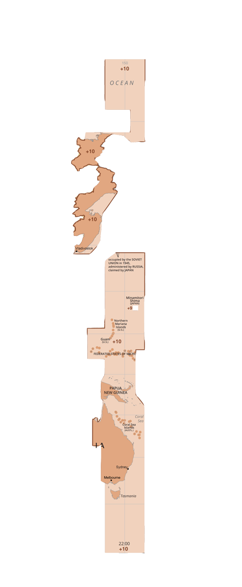
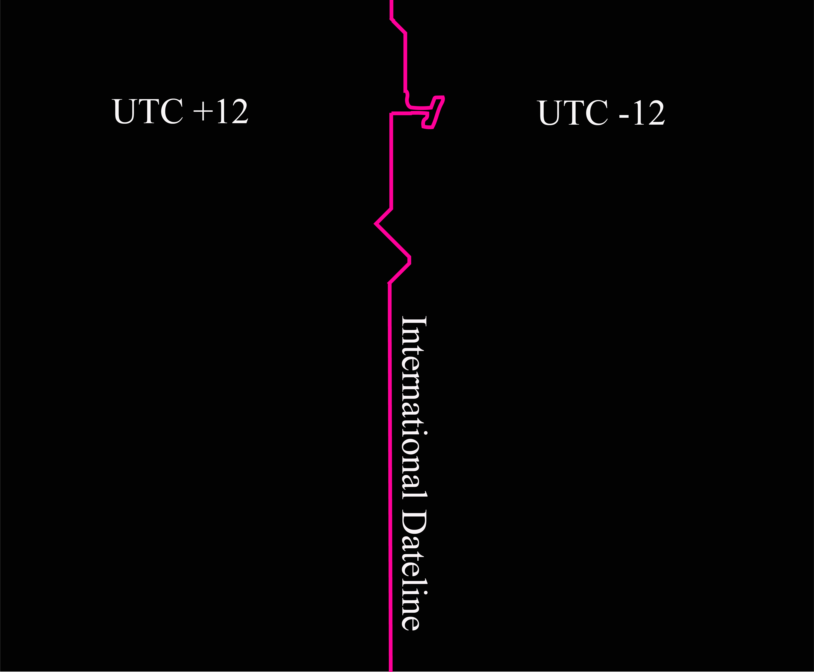
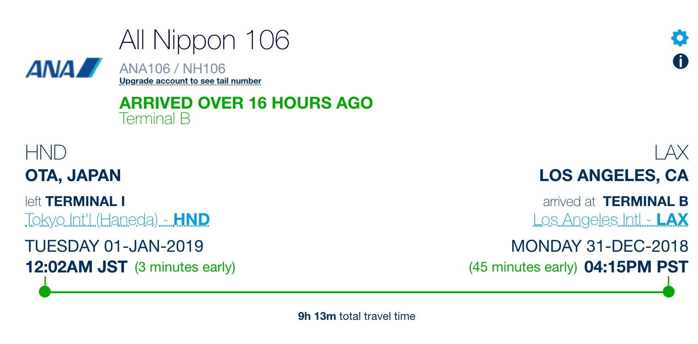

Timezones
As we look up to space from our precious planetary vantage, time changes: with speed, gravity, distance. Time also changes as we travel around the globe: a passing by as a consequence of travel, but also due to timezones. Time zones are a socially (politically) constructed phenomenon that have been modified and altered over time, bent by those in power to suit all kinds of motives: cultural, poltical and economic. We created and curated the following content as an attempt to understand time from an atomic, geographical and social perspective, though multimedia and fiction.
Animation of timezones
An audio and visual infographic illustrating the 38 time zones across the world.
Tales from time-nations
“Instead of perception depending largely on signals coming into the brain from the outside world, it depends as much, if not more, on perceptual predictions flowing in the opposite direction. We don’t just passively perceive the world, we actively generate it” - Anil Seth
---Hover over or click to see content---
Active hallucination
Rather than exploring timezones purely through the consumption and regugitation of research, we, in the spirit of Anil Seth, wrote the following stories to explore timezones through active hallucination:
UTC-9.5
-9.5
In our pacific puddle we stand high. We are identifiable by our long legs and strong eye sight. You are welcome to challenge us to a duel to chase the horizon... we will not lose.
UTC+0
Zero
New Year's eve, the most important holiday on the planet, the true differences between the 38, sovereign timestates are most intensly manifest. Plusones think they are special, celebrating an hour earlier, Negones likewise believe in some God given superiority, but we Noughties know better. Livestream beamers are being set up all over the city to connect the nation to itself. It is always surreal to see snows of the far north framed by Palm trees and sand, but I, and I know I speak for all Noughties, feel pride in being a part of the true beginning, and the true end, of UTC.
UTC+9.5
+9.5
People of +9.5, (AKA "Block") feel and breathe in synchrony with one another as our bodies touch the same soil. We are fully integrated as human beings and love our land. We pride ourselves on being a unique nation where our whole is greater than the sum of our parts.
UTC+10
+10
Plusten contains a void in connecting land and sea which manifests as an asymptote in personality in its inhabitants. They can never give you exact answers, only approximates. Organisms speak +10, the local language. They can only understand one another speaking this language if each sound or word is completed with a dot to the "i" by the other person in the conversation. Group conversations are not possible.
UTC+12.75
+12.75
If you blink you might not see us from above. Small as we are our balanced land and water is in harmony, as is our time. We are unique and localised; encompassed by our local waters and islands. A rare phenomenon for the globe. Other zones breach vast latitudes and longitudes, not us. We invite you to enjoy our proximity and bask in our nuclear environment.
Timetravel
Dateline
At the temporal border between time zones UTC +12 and UTC -12, the dateline lies. On this liminal border humans can time travel across three days in less than 5 minutes. If at 23h59 on 23rd May you travel from UTC +12 across the dateline to UTC -12, it will be 22nd May for one minute minus the time it took you to travel across the dateline. At 00h01 it will again be 23rd May in UTC -12 and if you travel back over the dateline to UTC +12 it will be 24th May. Overall, you will have travelled from the 23rd to the 22nd, and then back to 24th May in less than 5 minutes.
Travel time
When flying across the dateline you can gain a day.
Clock

An interpretation of a possible "timezone clock", with "realtime" progressing clockwise over the 38 timezones.
=======No-Affect
The farthest border: The limit of all possible experience. A limit so distant, nothing that ever happened beyond there-then, will ever cause anything, at any point in the future, in our galactic neighbourhood. At such a distance, the space between here-now and there-then grows faster than the speed of light. Like running on an elastic road, stretching faster apart than anything can ever run.
>>>>>>> parent of 58ca6f3... Testing